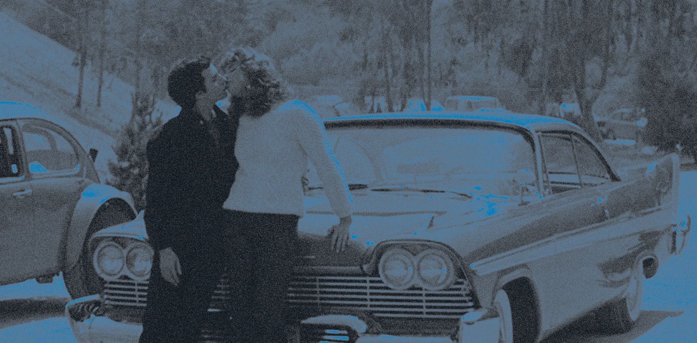
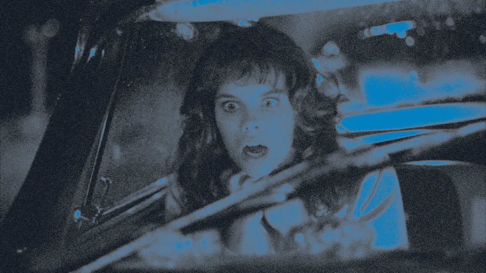

christine
de CARPENTER john (1983).
Arnie est timide et angoissé. Ses défauts trop manifestes le désignent à la vindicte de ses camarades de lycée, dont il est devenu la risée et le souffre-douleur. Il aperçoit un beau jour la voiture de ses rêves, une Plymouth Fury 1957 en piteux état. N'écoutant que son coup de foudre et bravant toutes les difficultés, il achète l'engin et le restaure amoureusement.
 - DISTRIBUTION
- GORDON Keith : Arnold « Arnie » Cunningham
- STOCKWELL John : Dennis Guilder, meilleur ami d'Arnie
- PAUL Alexandra : Leigh Cabot, nouvelle arrivante au lycée
- PROSKY Robert : Will Darnell, garagiste antipathique
- STANTON Harry Dean : Rudolph Junkins, inspecteur de police enquêtant sur les meurtres
- BELFORD Christine : Regina Cunningham, mère d'Arnie
- BLOSSOM Roberts : George LeBay, vieil homme douteux, revend Christine à Arnie
- OSTRANDER William : Clarence « Buddy » Repperton, voyou renvoyé du lycée
- DANARE Malcolm : Peter « Moochie » Welch, copain de Buddy
- SPIELBERG David : M. Casey, censeur du lycée
- TASH Steven : Richard « Richie » Trelawney, copain de Buddy
- CHARNO Stuart : Donald « Don » Vandenberg, copain de Buddy
- DARNELL Robert : Michael Cunningham, père d'Arnie
- PRESTON Kelly : Roseanne, lycéenne amoureuse de Dennis
- COLLIER Richard : Pepper Boyd, ami de Darnell
- POPPEL Marc Poppel : Chuck, copain de Dennis
- MADDEN John : lui-même
- EVANS Art : l'homme tué par Christine au début du film
- FICHE TECHNIQUE
- Titre original : John Carpenter’s Christine
- Réalisation : John Carpenter
- Scénario : Bill Phillips d'après le roman de Stephen King
- Musique : John Carpenter et Alan Howarth
- Genre : horreur, fantastique, drame, thriller
- Durée : 111 minutes